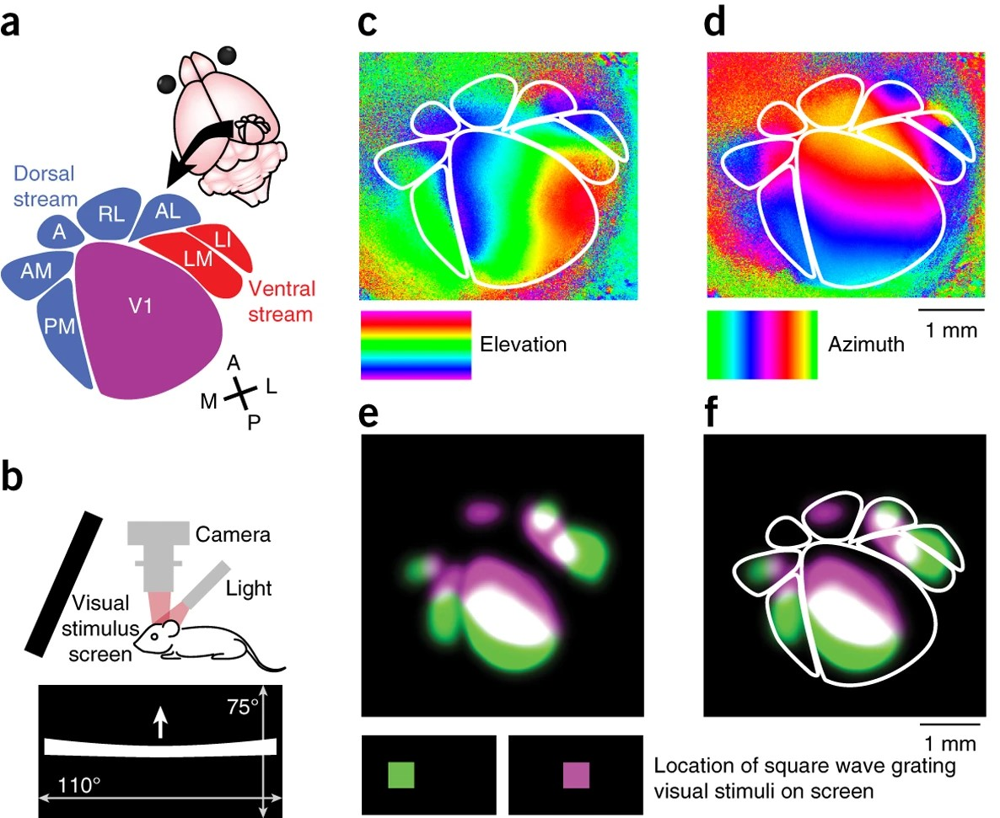
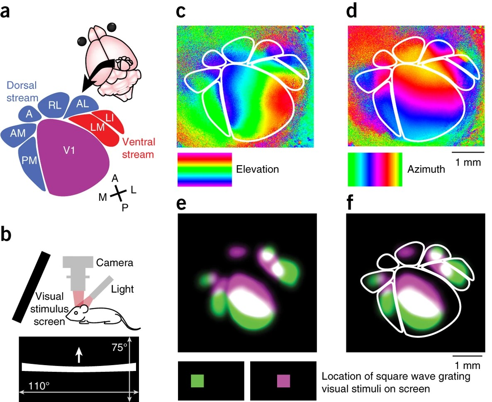
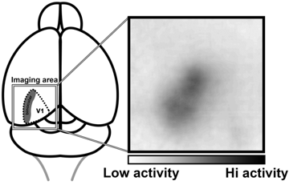
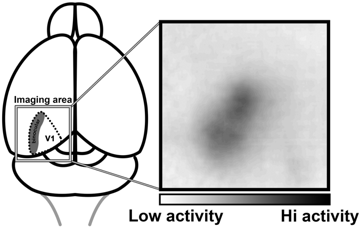
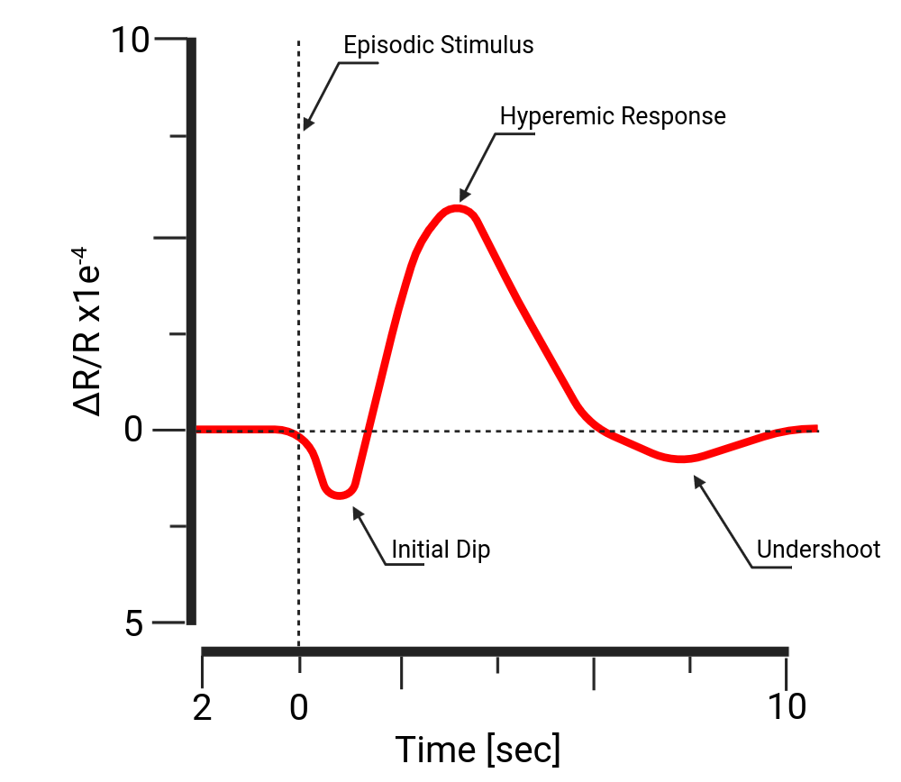
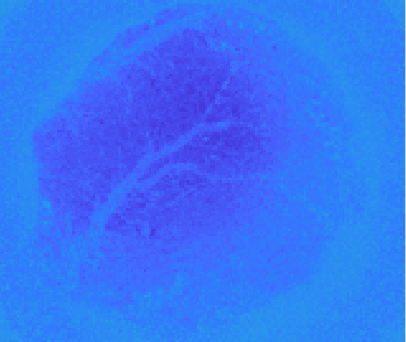
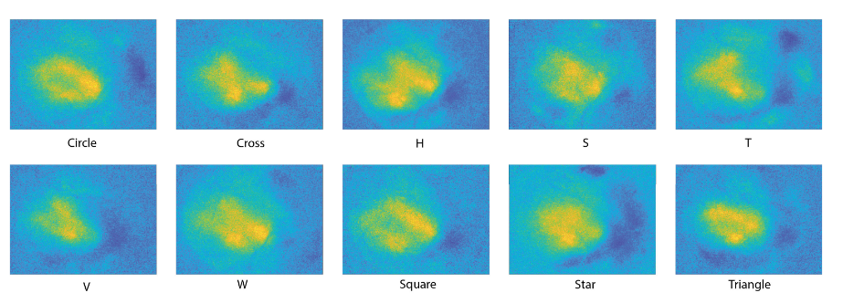
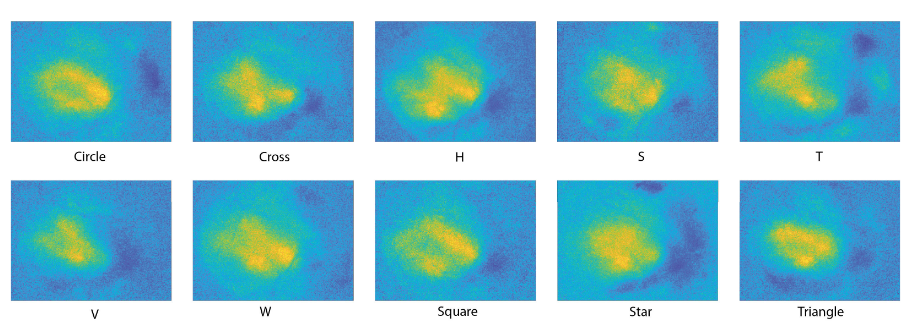

flowchart LR A[Neural activity] --> B[Neuronal signaling] A --> C[Astrocytic integration] A --> D[Metabolic changes] B --> E[Vascular response] C --> E D --> E
Metodi di Psicofisiologia e Neuroimaging nella Clinica e nelle Neuroscienze Cognitive
Intrinsic Signals
Neurovascular Unit
Neurons rely almost entirely on: glucose and oxygen. These are delivered by the vascular system. Neural activity therefore requires a local vascular response.
Neurovascular coupling refers to the set of mechanisms by which changes in neural activity lead to changes in:
cerebral blood flow(CBF)blood volumeblood oxygenation
This coupling is
local,regulated, andstimulus-dependent.
Neurovascular coupling is not controlled by neurons alone. It involves interactions between:
neuronsastrocytesendothelialcellssmooth musclecells
This is often referred to as the neuro-glio-vascular unit.

Neurovascular Mechanisms
There is not a single pathway linking neurons to vessels. Current models describe 3 main mechanisms:
directneuronal signalingastrocyte-mediatedsignalingmetabolic feedbacksignaling
These mechanisms act
in parallel, not in isolation.

Mechanism 2: Astrocyte-mediated signaling
Astrocytes:
- sense synaptic activity
- integrate signals over space and time
- release vasoactive substances
They do not fire action potentials, but they actively regulate blood flow.

Typical sequence after synaptic activation:
- glutamate activates astrocytic receptors
- intracellular calcium rises
- vasoactive signals are released (vasodilation)
This pathway is slower than direct neuronal signaling. Roles:
- integrate and smooth fast neural fluctuations
- contribute to spatial spread of vascular responses
This helps explain why vascular signals are broader than neural ones.
The three mechanisms work together

Neurovascular coupling emerges from:
fastneuronal feedforward signalingintermediateastrocytic integrationslowermetabolic feedback
What does “intrinsic” mean?
Intrinsic signal optical imaging uses the brain’s own optical properties.
- No dyes.
- No fluorescent reporters.
- No genetic indicators.
The signal emerges from:
hemoglobin absorptionblood volumechangeslight scatteringchanges

Why the visual cortex?
The visual cortex is the ideal model system because:
- it has precise
topographic organization - responses are
stimulus-locked
Retinotopy is a functional property of several visual areas:
- neighboring points in visual space
- are represented by neighboring points in cortex
Different visual areas have a complete (almost) representation of the visual field.
flowchart LR A[Visual stimulus in left field] --> B[Right visual cortex activation] C[Stimulus moves upward] --> D[Activation shifts dorsally]
 

In ISI:
- reflected light is recorded
- The readout is a
reflectance change over time.
Why reflectance changes
Hemoglobin absorbs light.
Oxygenated (OHb) and deoxygenated (RHb) hemoglobin:
- have different
absorption spectra - absorb differently at different wavelengths
Therefore: changes in oxygenation → changes in reflectance.
.png)
Wavelength matters
Different wavelengths emphasize different components.
Around 610-680 nm:
RHb absorbsstronglyactive regions appear darkersignal correlates with increased HbR
Other wavelengths emphasize different dynamics.
Optical logic of ISI
Neural activation
- increases oxygen consumption
- transient increase in HbR
- later increase in OHb
Optical consequence
- reflectance decreases at HbR-sensitive wavelengths
spatially localized darkening- reproducible stimulus-locked maps
 

Early and late components
The intrinsic signal has components:
initial dip(early oxygen extraction)hyperemic response(increased blood flow)- post-stimulus
undershoot
These reflect the three mechanisms of neurovascular coupling.
 
Mapping retinotopy with ISI
Typical paradigm:
- moving bar stimulus
- drifting grating
- phase-encoded visual stimulation
The cortical response:
- shifts smoothly
- mirrors stimulus movement
- produces continuous retinotopic maps
 
Mapping retinotopy with ISI
The retinotopic organization is so strong that you can even draw on the visual cortex.
In this experiment we tried to understand what is the stimulus shape from the activation pattern. As shown here: clear distinct activation patterns emerge after visual stimulation.
 

What is fNIRS?
Functional Near Infrared Spectroscopy (fNIRS) is a non-invasive method that measures changes in:
- OHb
- RHb
through near-infrared (NIr) light transmitted across the scalp.

Biological tissue has an optical window approximately between:
700 nm and 900 nm
In this range:
- light penetrates scalp and skull
- hemoglobin absorbs selectively
- water and lipids absorb less
This makes deep measurement possible.
From reflectance to absorption
In ISI:
- light hits cortex
reflectancechanges are measured
In fNIRS:
- light enters scalp
- travels through tissue
- is partially absorbed
- exits at a detector
We measure changes in light attenuation (
Absorbance).

Source-detector pairing
Optodes are arranged in structured arrays on the scalp.
A source and a detector form a channel. The distance between them is typically:
- 2.5 to 3.5 cm in adults
- shorter in infants
This distance determines sampling depth.

The light path forms a curved trajectory called Banana-shaped sensitivity profile. Maximum sensitivity occurs approximately:
- halfway between source and detector
- at a depth of about half the separation distance
Scalp blood flow contributes strongly. To control for this, systems include Short (separation) channels:
- short channels (8–10 mm distance)
- mainly sensitive to
superficial layersof the tissue
These are used to regress out scalp effects.